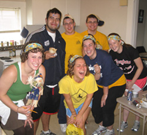

The Future
Witnessing the joy of a family come through in their difficult time is powerful. This has been so powerful that our members are inspired to share this passion and allow more people to have the same experiences as we have. This has led us to dreams, and now a reality, of expansion to additional campuses. In the short years since our 2007 beginning, UD has been glad to welcome Xavier and Wittenberg to the circle to fulfil more wishes and create more lasting memories.
The success will not stop there. By bringing in just 2 additional college campuses each year, in ten years Distance 4 Dreams will have granted the wishes of, at minimum, 120 families. This goal is achievable, but only with the help and dedication of strong student leaders. In the coming years our students will set higher fundraising goals; seek more student involvement; and better involve alumni, parents, and the community. Distance 4 Dreams is always welcoming the opportunity at looking at expansion to further campuses. For more information, please contact expansion@distance4dreams.org.
There is no better time than today to show the world who we are.
We are dedicated to dreams, no matter the distance.